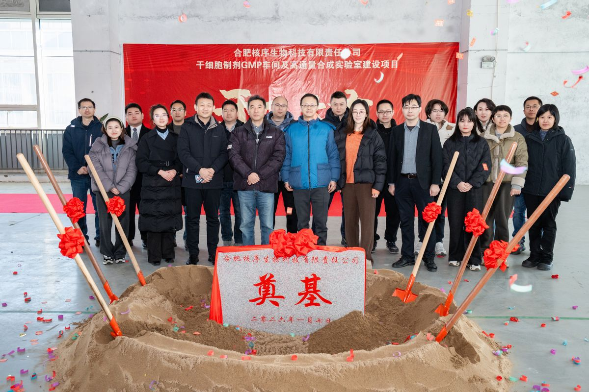

2026年1月7日，合肥核信生物科技有限责任公司新场地在合肥高新区国家健康大数据产业园C1栋4楼正式奠基开工。新场地的建设标志着核信生物从研发阶段向产业化迈出了关键一步，公司将在此打造符合GMP标准的干细胞制剂生产车间及高通量基因合成实验室。

本次建设规划涵盖干细胞制剂GMP车间与高通量基因合成实验室两大核心功能模块。其中，GMP车间将严格按照《药品生产质量管理规范》标准建设，配备A/B/C/D四级洁净区域，用于干细胞治疗产品的工艺开发与临床级样品生产；高通量合成实验室则依托公司自主研发的MOSAIC技术，建设国内首条DNA长片段（1000–2000 bp）自动化量产线，实现年产10万–30万条高质量DNA片段的生产能力。
新场地总占地面积充足，功能分区明确，涵盖细胞培养区、质控检测区、试剂耗材仓储区及办公配套区。场地建设将分两期推进：一期重点完成GMP车间核心净化工程及高通量合成平台搭建，预计年内投入使用；二期将扩展干细胞分化平台及生信分析计算集群，进一步完善从基因合成到细胞治疗的全链条基础设施。
核信生物联合创始人表示："新场地的开工是公司发展的重要里程碑。GMP车间的建成将使我们能够生产符合临床研究标准的干细胞制剂，大幅加速现有管线——包括生殖健康、皮肤抗衰及脑神经再生等项目的临床转化进程。高通量合成实验室的落成也将为公司及合作伙伴提供高效、低成本的基因合成服务，服务更广泛的生物医药与合成生物学研究。"
合肥高新区国家健康大数据产业园是安徽省重点打造的生命健康产业集聚区，已吸引多家生物医药企业入驻。核信生物作为园区内专注于干细胞与mRNA技术的创新企业，将充分利用园区的产业集群优势与政策支持，加快推进再生医学管线的研发与产业化。